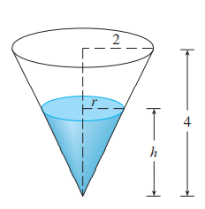

Um tanque de água possui o formato de um cone circular invertido, com base de raio de $2m$ e altura igual a $4m$. Se a água está
sendo bombeada para o tanque a uma taxa de $2m^3/min$, encontre a taxa na qual o nível de água está aumentando quando a água
estiver a $3m$ de profundidade.
Foi nos dado que $\frac{dV}{dt} = 2m^3/min$ e nos foi pedido para encontrar $\frac{dh}{dt}$ quando $h$ for $3m$.
As quantidas V e h são relacionadas pela equação:
$$V = \frac{1}{3}\pi r^2h $$
Para eliminar $r$, usamos os triângulos similares da figura (basicamente é só estabelecer uma proporção) para escrever:

$$\frac{r}{h} = \frac{2}{4}
\\r = \frac{h}{2}
$$
Assim, a expressão V se torna:
$$\frac{1}{3}\pi(\frac{h}{2})^2h = \frac{\pi}{12}h^3$$
Aplicando derivada em ambos os lados:
$$ \frac{dV}{dt} = \frac{\pi}{4}h^2\frac{dh}{dt}
\\ \frac{dh}{dt} = \frac{4}{\pi(h^2)}\frac{dV}{dt}
$$
Substituindo $h=3 m$ e $\frac{dv}{dt} = 2 m^3/min$, temos:
$$ \frac{dh}{dt} = \frac{4}{\pi(3)^2}*2
\\ = \frac{8}{9\pi}
$$